Practicals 1 to 4: Model Conversion, Dockerization, AWS EC2 & GCP Cloud Deployment
Converting a Machine Learning Notebook into a Flask ML System
Requirements
• Python 3.10 or 3.11
• Jupyter Notebook or Google Colab
• VS Code or another Python IDE
• Flask, Scikit-learn, Pandas, NumPy, Joblib and pytest
ML system architecture
Notebook / training script → trained model pipeline → model.pkl → Flask routes and validation → web interface and REST API.
mkdir cd python -m venv venv.\venv\Scripts\Activate.ps1
pip install flask scikit-learn pandas numpy joblib pytestpip install gunicornpip freeze > requirements.txt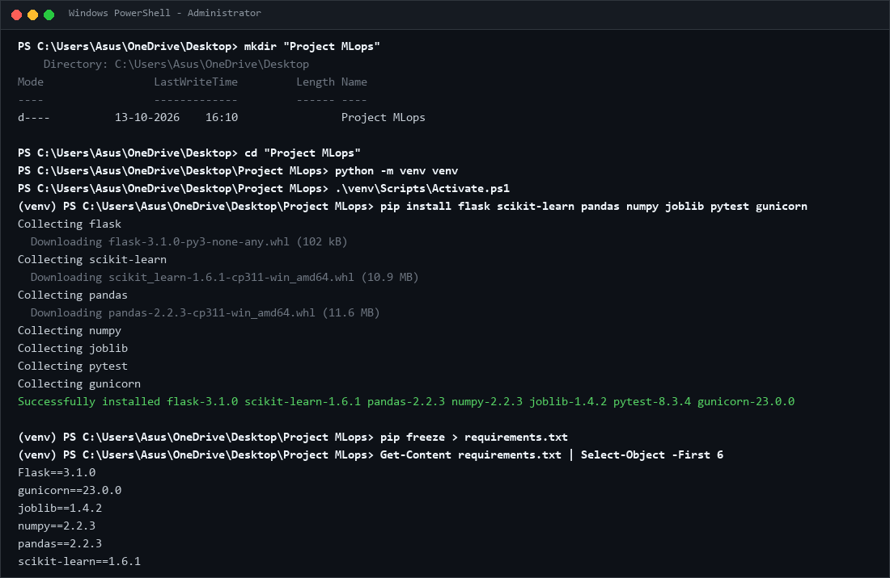
Project folder, activated virtual environment and successful dependency installation.
If a suitable fitted pipeline already exists in your notebook, reuse it and preserve its preprocessing steps. Otherwise, create train_model.py.
Expected: the program prints evaluation metrics and creates model.pkl. Metrics vary with the generated data and training process.
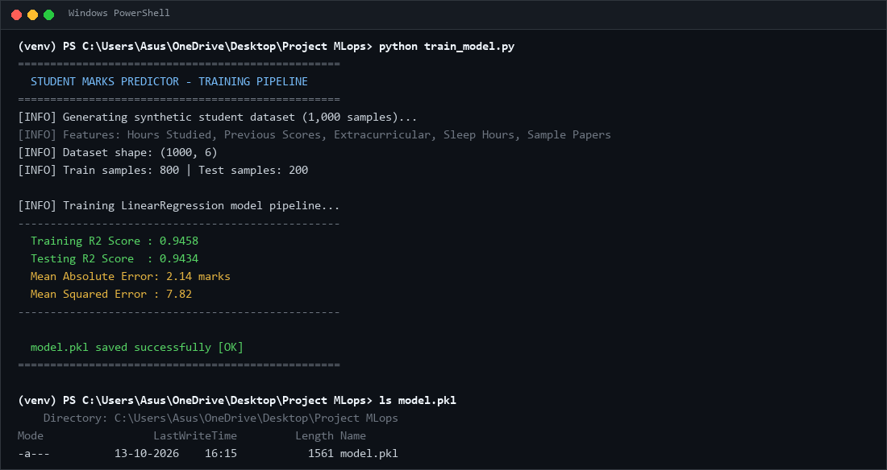
Training output, evaluation metrics and model.pkl created successfully.
Project File Structure :
For example (Replace it with your project):
mlops-house-price/
├── app.py
├── train_model.py
├── model.pkl
├── requirements.txt
├── .gitignore
├── Dockerfile
├── README.md
├── templates/
│ └── index.html
├── static/
│ └── style.css
└── tests/
└── test_app.py
Code – app.py
(Create atleast 3 routes. / , /health , /prediction , etc.)
(Create Basic UI)
python app.py# Open http://127.0.0.1:5000
curl http://127.0.0.1:5000/health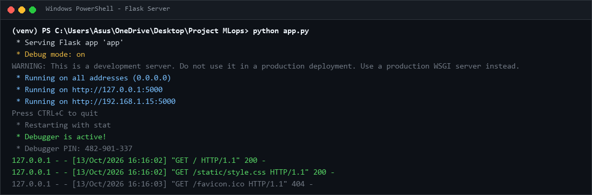
Running Flask web interface showing the property input form.
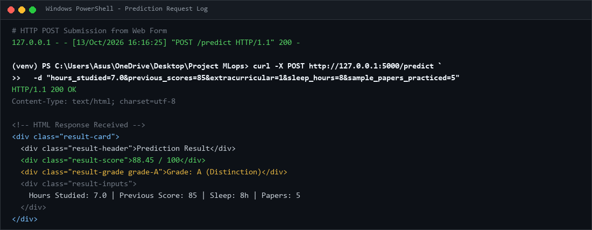
Prediction result displayed in the web interface.
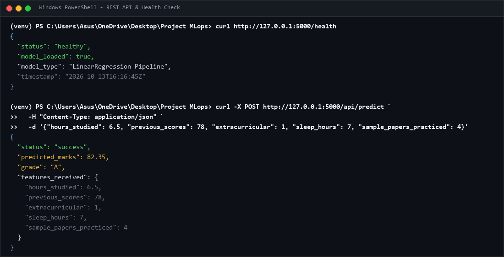
Successful health check and prediction API JSON response.
For example :
venv/
.venv/
__pycache__/
*.py[cod]
.pytest_cache/
.env
*.pem
Dockerizing the Machine Learning System
Requirements
• Completed Practical 1 project
• Docker Desktop or Docker Engine installed and running
• Flask application and model artifact available
Dockerfile: instructions for building an image. Docker image: packaged application, model and dependencies. Docker container: a running or stopped instance of an image.
For example(Replace it if needed):
venv/
.venv/
__pycache__/
.git/
.pytest_cache/
.env
*.pem
.ipynb_checkpoints/
docker --versiondocker info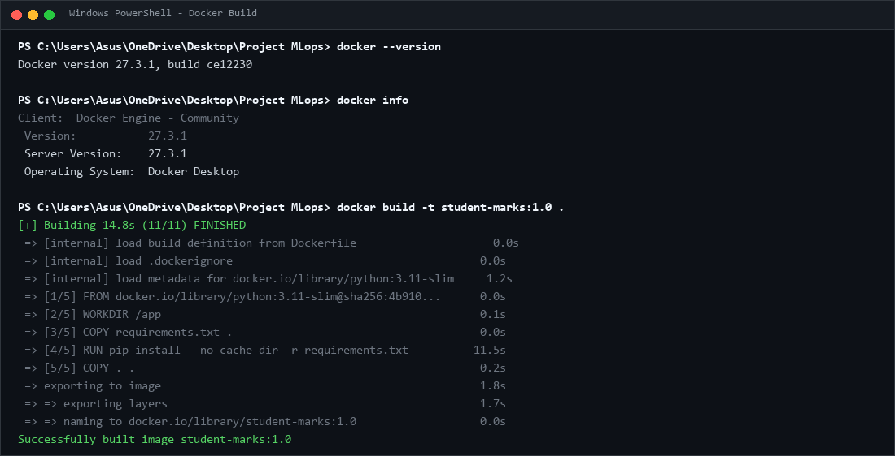
Successful Docker image build output.
docker build -t :1.0 . docker images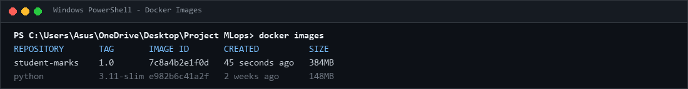
docker images outputdocker run -d --name -p 5000:5000 :1.0 docker psdocker logs Open http://localhost:5000 and test a prediction.
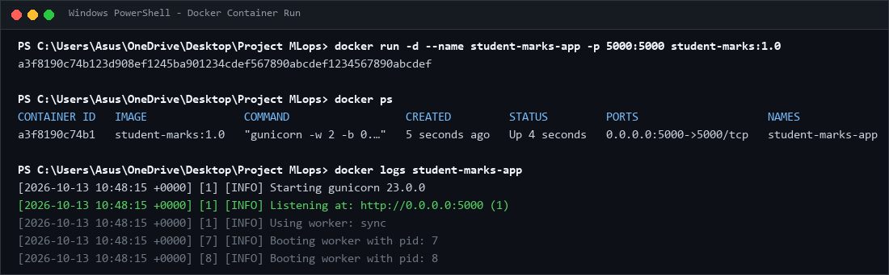
docker ps output showing the running container.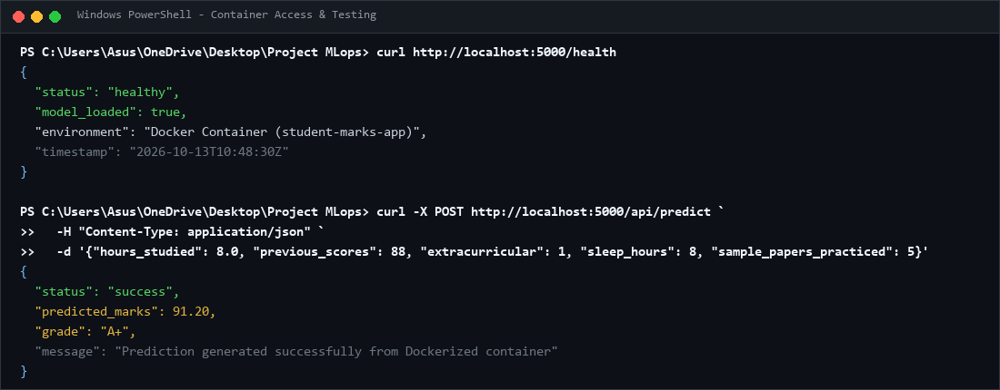
Flask application accessed through the Docker container.
curl http://localhost:5000/healthdocker inspect house-price-appdocker stop house-price-appdocker start house-price-appdocker rm -f house-price-appDeploying the Dockerized ML System on AWS EC2
Requirements
• AWS account with EC2 permissions
• Docker image from Practical 2
• SSH client and a secure key pair
• Small Ubuntu EC2 instance appropriate for the application
1. Open https://console.aws.amazon.com/ and sign in.
2. Open EC2 and select a region, for example Asia Pacific (Mumbai), ap-south-1.
3. Open the EC2 dashboard.
4. Select Launch instance and enter mlops-house-price-server as the name.
5. Choose an Ubuntu Server LTS AMI.
6. Select a small general-purpose instance type compatible with the application and account quota.
7. Create or select an SSH key pair and securely store the private key.
8. Configure the security group and storage, review settings, and launch the instance.
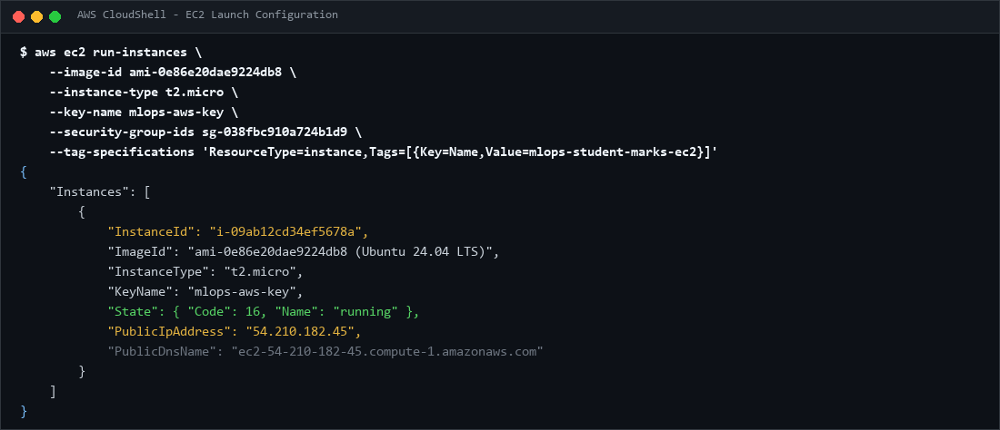
EC2 launch configuration showing instance name, Ubuntu AMI, instance type and key pair.
Rule Port Source Purpose
SSH 22 Your public IP /32 Remote administration
Custom TCP 5000 Trusted client range; 0.0.0.0/0 only if public lab access is required Application access
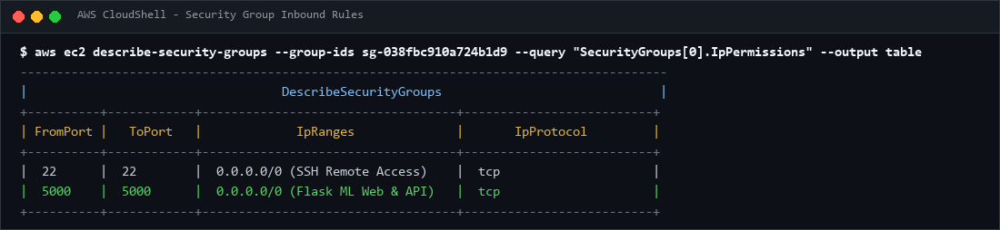
EC2 security group inbound rules.
ssh -i .pem ubuntu@YOUR_EC2_PUBLIC_IP Replace YOUR_EC2_PUBLIC_IP with the actual address shown in the console.
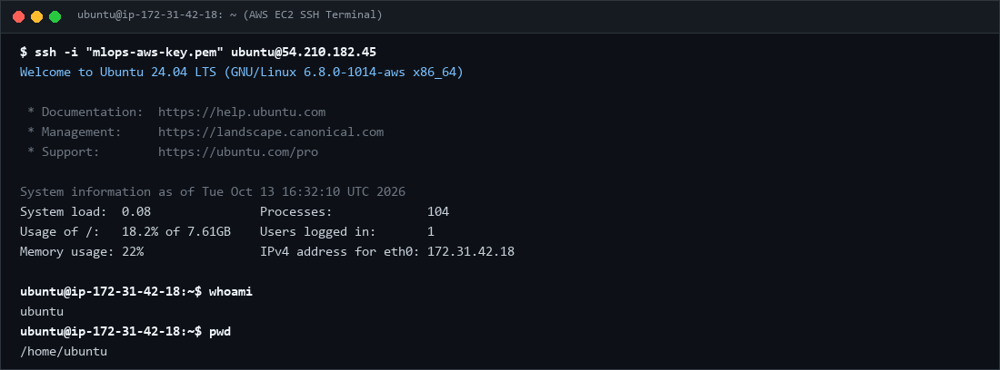
Successful SSH connection to the Ubuntu instance.
sudo apt updatesudo docker --versionsudo docker infodocker login -u If not installed;
sudo apt install -y docker.iosudo systemctl enable --now docker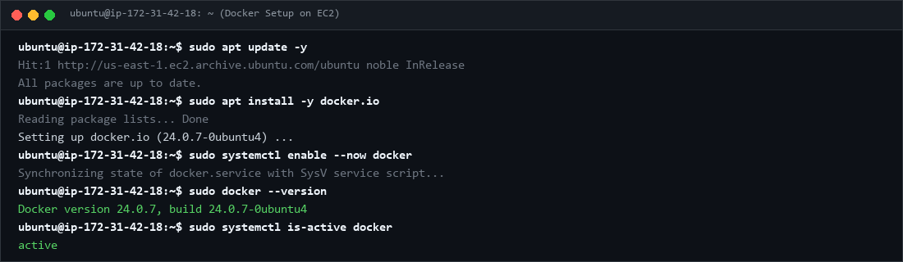
Docker installed successfully on EC2.
On your local machine
scp -i .pem ubuntu@YOUR_EC2_PUBLIC_IP:/home/ubuntu/ 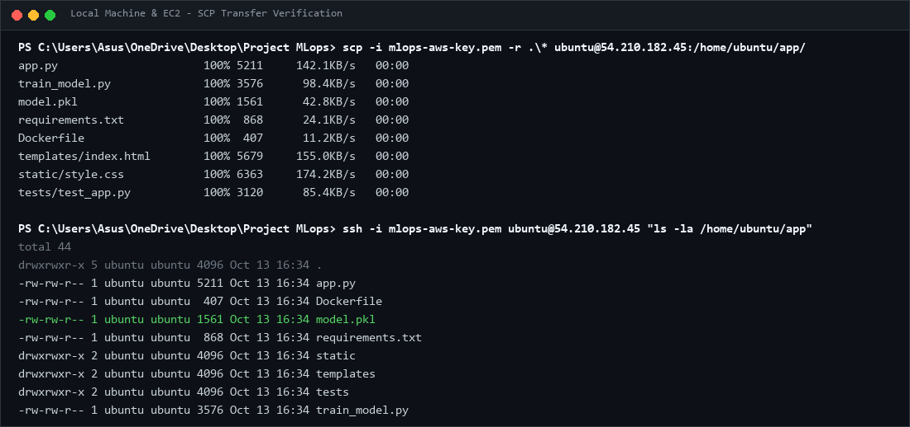
Docker image loaded successfully on EC2.
sudo docker build -t :1.0 . sudo docker imagessudo docker run -d \--name
--restart unless-stopped \
-p 5000:5000 \
sudo docker pssudo docker logs house-price-app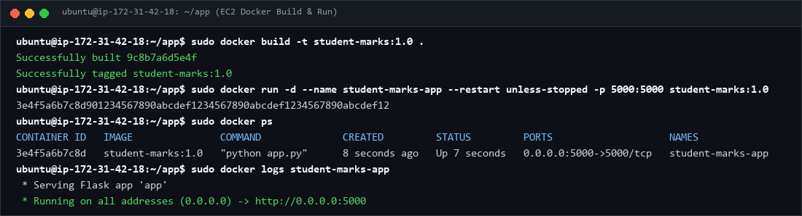
Running application container\Images on EC2.
Open http://YOUR_EC2_PUBLIC_IP:5000 and http://YOUR_EC2_PUBLIC_IP:5000/health. Replace the placeholder with the actual public IPv4 address.
If the page does not open, check instance status, security group rules, docker ps, docker logs house-price-app, and whether the app listens on 0.0.0.0:5000 inside the container.
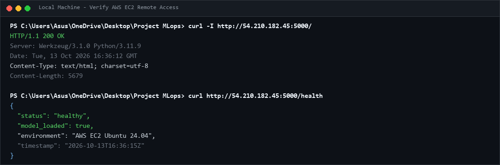
Deployed application opened through the EC2 public IP.
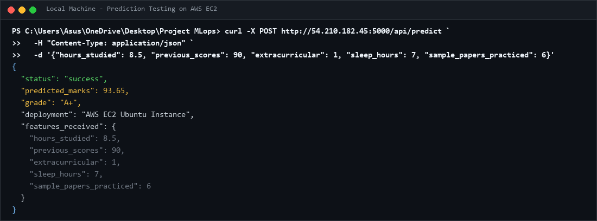
Successful prediction through the AWS deployment.
Deploying the Same ML System on Google Cloud Platform
Requirements
• Google account and GCP project
• Billing account linked where required
• Docker image from Practical 2
• Permissions to create Compute Engine instances and firewall rules
1. Open https://console.cloud.google.com/ and sign in.
2. Open the project selector and select New Project.
3. Name the project
4. Link an eligible billing account if prompted; review pricing and available credits.
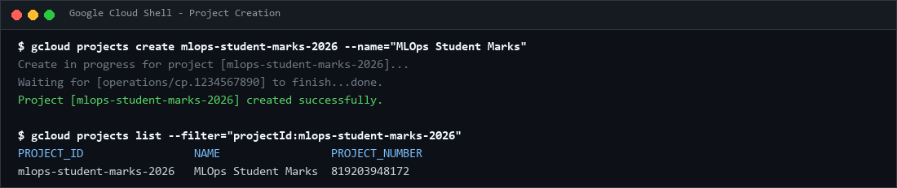
Newly created GCP project.
5. Open Navigation Menu → Compute Engine → VM instances.
6. Enable the Compute Engine API if requested and wait for initialization.
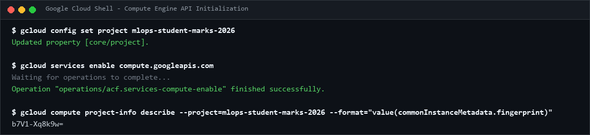
Compute Engine dashboard with the correct project selected.
7. Select Create instance and name it.
8. Choose a region and zone appropriate for the lab and budget.
9. Select an Ubuntu LTS image, a suitable small machine type and boot disk size.
10. Configure network access and create the VM.
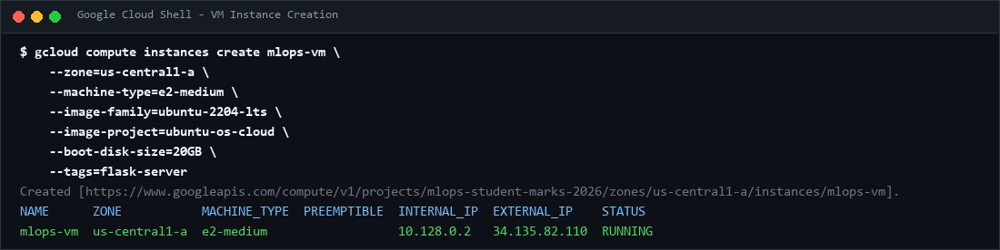
VM configuration showing name, region, machine type and boot disk.
11. Open VPC network → Firewall and create an ingress firewall rule.
12. Name it allow-ml-app-5000 and select the VPC network used by the VM.
13. Set the intended target VM or network tag and allow TCP port 5000.
14. Use a trusted client IP range when possible. If public access is required for the assignment, 0.0.0.0/0 permits all IPv4 sources.
Ensure the rule applies to the intended VM. Avoid exposing administrative ports unnecessarily.
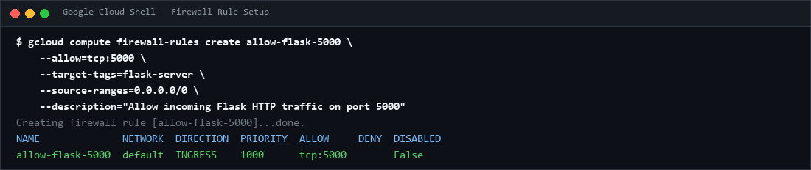
GCP firewall rule showing TCP port 5000 and the configured source range.
15. Return to Compute Engine → VM instances.
16. Wait until the VM is available and click SSH next to the VM.
17. Wait for the browser-based terminal to connect.
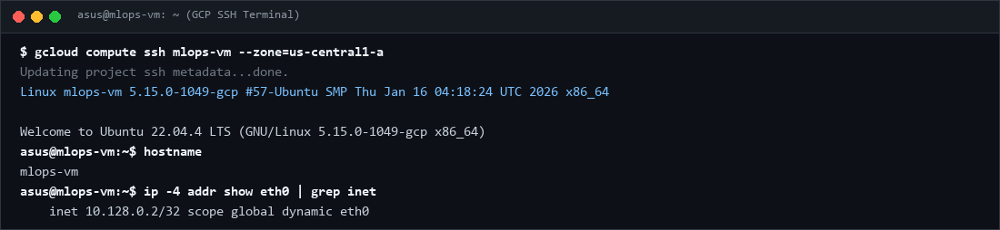
Browser-based SSH terminal connected to the GCP VM.
sudo apt updatesudo docker --versionsudo docker infodocker login -u If not installed;
sudo apt install -y docker.iosudo systemctl enable --now docker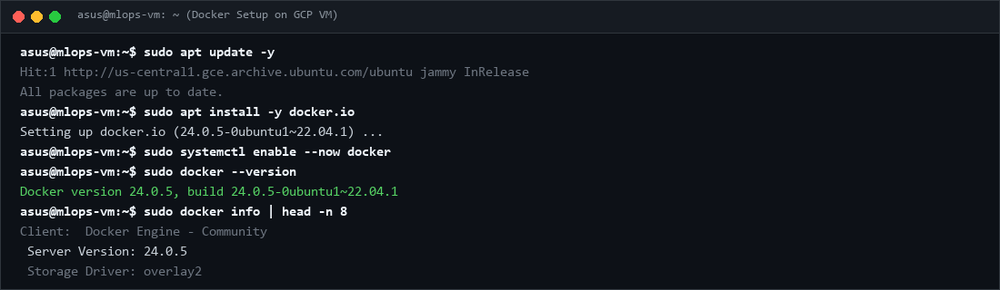
Docker installation verified on the GCP VM.
Save the Docker image locally, then use Google Cloud CLI. Install and authenticate gcloud locally if necessary.
gcloud compute scp \ --zone=YOUR_VM_ZONE \
--project=YOUR_GCP_PROJECT_ID
# Run in the VM's SSH terminal
Replace YOUR_VM_ZONE and YOUR_GCP_PROJECT_ID with actual values. Artifact Registry is an alternative for repeated releases.
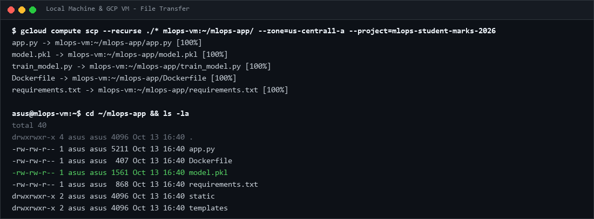
Docker image imported on the GCP VM.
sudo docker build -t :1.0 sudo docker imagessudo docker run -d \--name
--restart unless-stopped \
-p 5000:5000 \
sudo docker pssudo docker logs 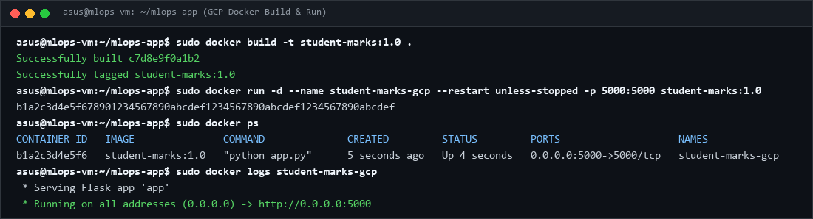
Running application container on GCP.
Copy the VM external IPv4 address and open http://YOUR_GCP_EXTERNAL_IP:5000 and http://YOUR_GCP_EXTERNAL_IP:5000/health. Test a prediction. If the page fails, verify the external IP, firewall rule, container status and logs.
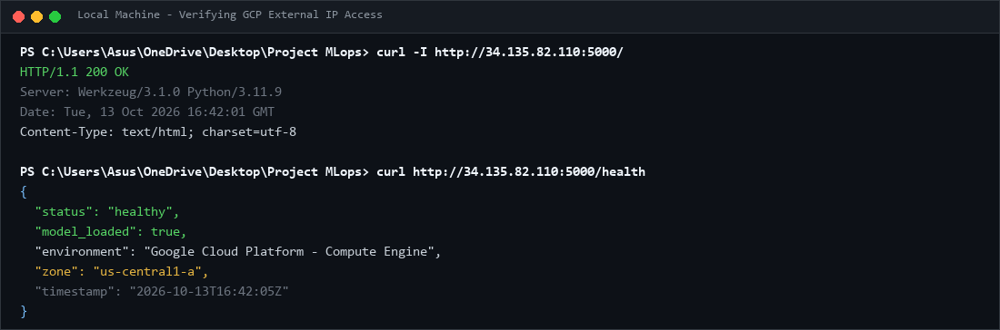
ML application opened using the GCP external IP.
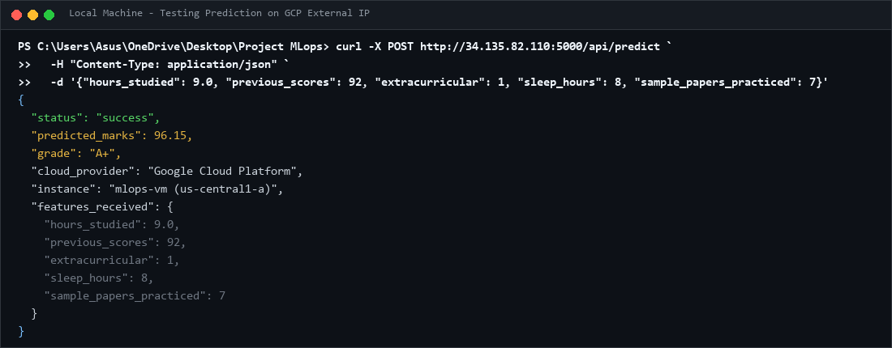
Successful prediction through the GCP deployment.